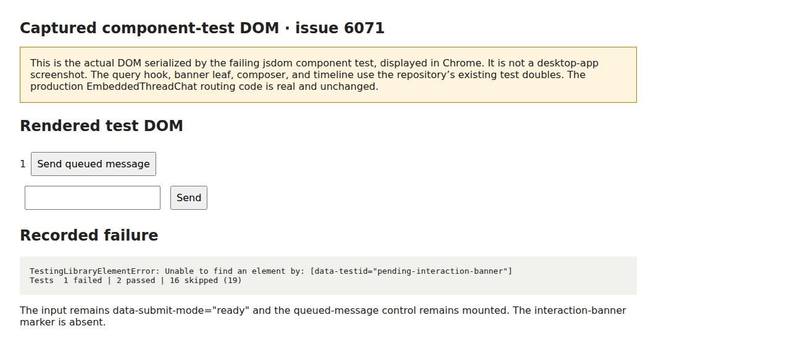

#6071 · Embedded chat discards plugin requests
2026-10-21 · trusted origin/main 69426e502969a47554a4eba828db634d20475fce
Verdict: REPRODUCED · Root-cause confidence: high · reproduction label: confirmed-repro
1. TL;DR
Embedded chat removes plugin-owned pending requests before deciding whether to mount its interaction area. A focused test against the real EmbeddedThreadChat component reproduces that omission: a plugin request leaves the ordinary input ready and queued messages visible, whereas approval and user-question control cases mount the banner. The banner implementation already supports plugin renderers; the embedded parent prevents it from receiving those requests. The same test fails for the same reason in a second newly installed clean checkout. No real provider turn, macOS desktop session, secret request, or main-view end-to-end interaction was exercised.
2. Claims vs findings
| Claim | Finding | Evidence |
|---|---|---|
| Embedded chat drops plugin requests | Verified dynamically | Plugin case fails in both clean checkouts; two non-plugin controls pass. |
| Composer remains available | Verified at component boundary | Serialized DOM retains data-submit-mode="ready" and queued-message controls. Composer itself is a test double. |
| Plugin renderer exists but cannot be reached here | Verified in trusted source | Shared banner’s default branch mounts PluginPendingInteractionComposer. |
| Side chat and SDK ThreadChat use the embedded path | Source verified | Side-chat mounts ThreadChat; core ThreadChat delegates to EmbeddedThreadChat. |
| Main thread displays the same form | Source supported; live behavior unverified | Main view forwards all ordered pending requests without the embedded filter. |
| Specific Pi/macOS AskUserQuestion and secret-request journeys | Unverified live | No provider process or desktop instance used. This is a controlled component reproduction. |
3. Environment
- Linux x86_64; Node 22.19.0; pnpm 9.15.0; Vitest 4.1.1; jsdom.
- Two separate temporary Git checkouts from trusted get-bb/bb origin/main at the full commit above. Both had independent frozen installs and successful 69-task Turbo builds.
- No application server ports, runtime database, provider credentials, or user data were used. A separate headless browser displays only the saved test DOM for the diagnostic image.
- The initial broad build hit an SDK build-order failure. Building SDK types/runtime through Turbo and retrying the unchanged build resolved setup. This was not the reproduction failure.
4. Minimal reproduction
- Clone trusted get-bb/bb, detach at
69426e502969a47554a4eba828db634d20475fce, and runpnpm install --frozen-lockfile --prefer-offline. - Run
pnpm exec turbo run build:types --filter=@get-bb/plugin-sdk,pnpm exec turbo run build --filter=@get-bb/plugin-sdk, thenpnpm exec turbo run build. - Save the investigator-authored patch from the inline appendix as
regression.patchand apply withgit apply regression.patch. It changes only an existing component test; production code stays unchanged. - Run:
pnpm exec turbo run test --filter=@bb/app -- --run src/components/thread/embedded-chat/EmbeddedThreadChat.test.tsx -t 'routes a pending'
Expected: all three request kinds mount the pending-interaction surface and hide queued controls. Actual, both runs:
✓ routes a pending approval request to the interaction surface ✓ routes a pending user_question request to the interaction surface × routes a pending plugin request to the interaction surface TestingLibraryElementError: Unable to find an element by: [data-testid="pending-interaction-banner"] Tests 1 failed | 2 passed | 16 skipped (19)
The regression extends the existing approval test into a three-case table, preserving the existing fixture and mocks. It exercises production routing, not the plugin renderer, network delivery, or provider bridge. Existing negative tests explicitly expect plugin requests to be ignored, which is why they do not catch this defect.
it.each(["approval", "user_question", "plugin"])("routes a pending %s request to the interaction surface", (kind) => {
mocks.pendingInteractions = [
{ id: "int_route", createdAt: 1, payload: { kind } },
];
mocks.queuedMessages = [{ id: "q_route" }];
renderEmbeddedChat({ threadId: "thr_side_chat" });
console.info("SLOPCOP_DOM", kind, document.body.innerHTML);
expect(screen.getByTestId("pending-interaction-banner").textContent).toBe(
"thr_side_chat",
);
expect(screen.queryByTestId("embedded-chat-queued-messages")).toBeNull();
});
Complete reproducible test file (inline appendix) · First run log (inline appendix) · Second run log (inline appendix)

Full regression test file (existing repository fixture plus investigator’s table change)
// @vitest-environment jsdom
import { cleanup, fireEvent, render, screen } from "@testing-library/react";
import { useEffect, useLayoutEffect, type ReactNode } from "react";
import {
afterEach,
beforeAll,
beforeEach,
describe,
expect,
it,
vi,
} from "vitest";
import { LazyQueuedMessagesList } from "@/components/promptbox/banner/LazyQueuedMessagesList";
import type { FollowUpComposerProps } from "@/components/promptbox/FollowUpPromptBox";
import type { PluginComposerHost } from "@/components/plugin/plugin-composer-host";
import { getPromptDraftAccessor } from "@/hooks/usePromptDraftStorage";
import { EmbeddedThreadChat } from "./EmbeddedThreadChat";
const mocks = vi.hoisted(() => ({
createQueuedMessageMutateAsync: vi.fn(),
onOpenLink: vi.fn(),
onOpenLocalFileLink: vi.fn(),
pendingInteractions: [] as
| Array<{
id: string;
createdAt: number;
payload: { kind: string };
}>
| undefined,
pendingInteractionsIsError: false,
pendingInteractionsIsFetching: false,
pendingInteractionsIsLoading: false,
queuedMessages: [] as Array<{ id: string }>,
sendQueuedMessageMutateAsync: vi.fn(),
sendThreadMessageMutateAsync: vi.fn(),
threadRuntimeDisplayStatus: "idle" as string,
timelineRows: [] as Array<{ text: string }>,
injectedTimelineProps: [] as Array<unknown>,
timelinePanelProps: [] as Array<Record<string, unknown>>,
timelineProjectIds: [] as Array<string | undefined>,
resolveMentionLink: vi.fn(),
}));
const hostDraftMocks = vi.hoisted(() => ({
latestHost: null as PluginComposerHost | null,
textAtNotify: [] as string[],
subscribed: false,
}));
vi.mock("@/components/promptbox/FollowUpPromptBox", async () => {
const { usePluginComposerHostDraft } =
await import("@/components/plugin/plugin-composer-host");
function BottomHostDraftProbe({ host }: { host: PluginComposerHost | null }) {
useLayoutEffect(() => {
hostDraftMocks.latestHost = host;
}, [host]);
useEffect(() => {
if (hostDraftMocks.subscribed || !host) return;
hostDraftMocks.subscribed = true;
host.subscribeDraft(() => {
hostDraftMocks.textAtNotify.push(
hostDraftMocks.latestHost?.getCurrent().text ?? "",
);
});
}, [host]);
const draft = usePluginComposerHostDraft(host);
return <div data-testid="embedded-host-draft">{draft?.text ?? ""}</div>;
}
return {
FollowUpPromptBox: ({
composer,
pendingInteraction,
stack,
pluginComposerHost,
}: {
composer: Pick<
FollowUpComposerProps,
"message" | "onChangeMessage" | "onSubmit" | "submitMode"
>;
pendingInteraction?: ReactNode;
stack: ReactNode;
pluginComposerHost?: PluginComposerHost | null;
}) => (
<div>
{stack}
{pendingInteraction}
<input
data-testid="embedded-chat-composer"
data-submit-mode={composer.submitMode.kind}
data-submit-reason={
composer.submitMode.kind === "blocked"
? composer.submitMode.reason
: undefined
}
value={composer.message}
onChange={(event) => composer.onChangeMessage(event.target.value, [])}
/>
<button type="button" onClick={composer.onSubmit}>
Send
</button>
<BottomHostDraftProbe host={pluginComposerHost ?? null} />
</div>
),
};
});
vi.mock("@/components/promptbox/banner/QueuedMessagesList", () => ({
QueuedMessagesList: ({
attachedToComposer,
onSend,
queuedMessages,
sendAction,
sendDisabled,
}: {
attachedToComposer: boolean;
onSend: (queuedMessageId: string) => void;
queuedMessages: readonly unknown[];
sendAction: "send-now" | "steer-when-ready";
sendDisabled: boolean;
}) => (
<div
data-testid="embedded-chat-queued-messages"
data-attached-to-composer={String(attachedToComposer)}
data-send-action={sendAction}
data-send-disabled={sendDisabled ? "" : undefined}
>
<span data-testid="queued-count">{queuedMessages.length}</span>
<button type="button" onClick={() => onSend("q1")}>
Send queued message
</button>
</div>
),
}));
vi.mock("@/components/ui/bottom-anchored-scroll-body", () => ({
BottomAnchoredScrollBody: ({
children,
footer,
scrollAreaClassName,
}: {
children: ReactNode;
footer: ReactNode;
scrollAreaClassName: string;
}) => (
<div
data-testid="embedded-chat-scroll-area"
className={scrollAreaClassName}
>
{children}
{footer}
</div>
),
}));
vi.mock("@bb/shared-ui/overflow-fade", () => ({
OverflowFade: ({ tone }: { tone: string }) => (
<div data-testid="embedded-chat-overflow-fade" data-tone={tone} />
),
}));
vi.mock("@/components/thread/timeline", () => ({
isRunningThreadRuntimeDisplayStatus: (status: string) => status === "active",
ThreadTimelinePanelContent: (props: Record<string, unknown>) => {
mocks.timelinePanelProps.push(props);
mocks.injectedTimelineProps.push(props.timeline);
mocks.timelineProjectIds.push(props.projectId as string | undefined);
return (
<div>
{mocks.timelineRows.map((row, index) => (
<div key={index} data-testid="embedded-chat-timeline-row">
{row.text}
</div>
))}
</div>
);
},
ThreadTimelineSurface: () => <div data-testid="draft-mode-surface" />,
}));
vi.mock("@/components/ui/app-toast", () => ({
appToast: { error: vi.fn() },
}));
vi.mock("@/hooks/useThreadCreationOptions", () => ({
useThreadCreationOptions: () => ({
executionOptionsRouting: undefined,
selectedProviderId: "provider-1",
providerOptions: [],
hasMultipleProviders: false,
selectedProviderDisplayName: "Provider",
selectedProviderComposerActions: [],
selectedModel: "gpt-5",
setSelectedModel: vi.fn(),
serviceTier: undefined,
setServiceTier: vi.fn(),
reasoningLevel: "medium",
setReasoningLevel: vi.fn(),
permissionMode: "auto",
setPermissionMode: vi.fn(),
activeModel: { model: "gpt-5" },
modelOptions: [],
moreModelOptions: [],
modelLoadFailed: false,
modelLoadError: null,
reasoningOptions: [],
permissionModeOptions: [],
supportsPermissionModeSelection: true,
supportsServiceTier: false,
serviceTierSupportByProvider: {},
isLoadingModels: false,
}),
}));
vi.mock("@/hooks/usePromptMentions", () => ({
usePromptMentions: () => ({
triggers: [],
results: { groups: [], suggestions: [] },
isLoading: false,
isError: false,
setQuery: vi.fn(),
}),
}));
vi.mock("@/hooks/useCommandSuggestions", () => ({
useCommandSuggestions: () => ({
triggers: [],
suggestions: [],
isLoading: false,
isError: false,
hasMore: false,
isLoadingMore: false,
loadMore: vi.fn(),
}),
}));
vi.mock("@/hooks/queries/thread-queries", () => ({
useThread: (threadId: string) => ({
data:
threadId.length > 0
? {
id: threadId,
status: "active",
runtime: { displayStatus: mocks.threadRuntimeDisplayStatus },
environmentId: null,
latestAttentionAt: 1,
}
: undefined,
}),
useThreadQueuedMessages: () => ({ data: mocks.queuedMessages }),
useThreadPendingInteractions: () => ({
data: mocks.pendingInteractions,
isError: mocks.pendingInteractionsIsError,
isFetching: mocks.pendingInteractionsIsFetching,
isLoading: mocks.pendingInteractionsIsLoading,
}),
orderPendingInteractions: (
interactions: readonly { createdAt: number }[] | undefined,
) => interactions ?? [],
}));
vi.mock(
"@/components/thread/pending-interactions/ThreadPendingInteractionBanner",
() => ({
ThreadPendingInteractionBanners: ({ threadId }: { threadId: string }) => (
<div data-testid="pending-interaction-banner">{threadId}</div>
),
}),
);
vi.mock("@/hooks/queries/thread-default-execution-options-query", () => ({
useThreadDefaultExecutionOptions: () => ({
data: {
model: "gpt-5",
permissionMode: "auto",
reasoningLevel: "medium",
serviceTier: undefined,
},
isLoading: false,
}),
}));
vi.mock("@/hooks/queries/system-queries", () => ({
useSystemConfig: () => ({
data: {
generalSettings: {
steerActiveThreadOnEnter: false,
},
},
}),
}));
vi.mock("@/hooks/mutations/thread-runtime-mutations", () => ({
useCreateThreadQueuedMessage: () => ({
mutateAsync: mocks.createQueuedMessageMutateAsync,
mutate: vi.fn(),
isPending: false,
}),
useSendThreadMessage: () => ({
mutateAsync: mocks.sendThreadMessageMutateAsync,
isPending: false,
}),
useStopThread: () => ({
mutate: vi.fn(),
isPending: false,
variables: undefined,
}),
useDeleteThreadQueuedMessage: () => ({
mutateAsync: vi.fn(),
isPending: false,
}),
useReorderThreadQueuedMessage: () => ({
mutateAsync: vi.fn(),
isPending: false,
}),
useSendThreadQueuedMessage: () => ({
mutateAsync: mocks.sendQueuedMessageMutateAsync,
isPending: false,
}),
useSetThreadQueuedMessageGroupBoundary: () => ({
mutateAsync: vi.fn(),
isPending: false,
}),
useUpdateThreadQueuedMessage: () => ({
mutateAsync: vi.fn(),
isPending: false,
}),
}));
vi.mock("@/hooks/mutations/thread-state-mutations", () => {
const mutate = vi.fn();
return { useMarkThreadRead: () => ({ mutate }) };
});
vi.mock("@/hooks/useThreadReadTracking", () => ({
useThreadReadTracking: () => {},
}));
vi.mock("@/hooks/mutations/project-mutations", () => ({
useUploadPromptAttachment: () => ({
mutateAsync: vi.fn(),
isPending: false,
}),
}));
function buildEmbeddedChat({
threadId = "thr_child",
surfaceTone = "background",
pluginComposerBottomScope,
}: {
threadId?: string;
surfaceTone?: "background" | "sidebar";
pluginComposerBottomScope?: PluginComposerHost["scope"];
} = {}) {
return (
<EmbeddedThreadChat
variant="compact"
surfaceTone={surfaceTone}
threadId={threadId}
projectId="proj-1"
providerId="provider-1"
promptContextEnvironmentId={null}
onOpenLink={mocks.onOpenLink}
onOpenLocalFileLink={mocks.onOpenLocalFileLink}
resolveMentionLink={mocks.resolveMentionLink}
workspaceRootPath="/workspace"
composer={{
draftScope: {
kind: "thread",
projectId: "proj-1",
threadId,
},
executionDefaultsThreadId: threadId,
executionResetKey: "thr_parent",
permissionPolicy: "snapshot",
environmentSummary: null,
...(pluginComposerBottomScope ? { pluginComposerBottomScope } : {}),
}}
/>
);
}
function renderEmbeddedChat(
options: Parameters<typeof buildEmbeddedChat>[0] = {},
) {
return render(buildEmbeddedChat(options));
}
describe("EmbeddedThreadChat", () => {
beforeAll(() => LazyQueuedMessagesList.preload());
beforeEach(() => {
window.localStorage.clear();
mocks.createQueuedMessageMutateAsync.mockReset().mockResolvedValue({});
mocks.sendThreadMessageMutateAsync.mockReset().mockResolvedValue({});
mocks.onOpenLink.mockReset();
mocks.onOpenLocalFileLink.mockReset();
mocks.pendingInteractions = [];
mocks.pendingInteractionsIsError = false;
mocks.pendingInteractionsIsFetching = false;
mocks.pendingInteractionsIsLoading = false;
mocks.queuedMessages = [];
mocks.sendQueuedMessageMutateAsync.mockReset().mockResolvedValue({});
mocks.threadRuntimeDisplayStatus = "idle";
mocks.timelineRows = [];
mocks.injectedTimelineProps = [];
mocks.timelinePanelProps = [];
mocks.timelineProjectIds = [];
mocks.resolveMentionLink.mockReset();
hostDraftMocks.latestHost = null;
hostDraftMocks.textAtNotify = [];
hostDraftMocks.subscribed = false;
});
it("applies the requested surface tone to the timeline and footer", () => {
renderEmbeddedChat({ surfaceTone: "sidebar" });
expect(
document.querySelector(
'[data-thread-window][data-surface-tone="sidebar"]',
),
).not.toBeNull();
expect(screen.getByTestId("embedded-chat-overflow-fade").dataset.tone).toBe(
"sidebar",
);
expect(
screen.getByTestId("embedded-chat-composer").closest(".bg-sidebar"),
).not.toBeNull();
});
afterEach(() => {
cleanup();
});
it("forwards the project to the timeline so attachment images resolve to API URLs", () => {
renderEmbeddedChat();
expect(mocks.timelineProjectIds.at(-1)).toBe("proj-1");
});
it("forwards host navigation to the embedded timeline", () => {
renderEmbeddedChat();
expect(mocks.timelinePanelProps.at(-1)).toEqual(
expect.objectContaining({
onOpenLink: mocks.onOpenLink,
onOpenLocalFileLink: mocks.onOpenLocalFileLink,
resolveMentionLink: mocks.resolveMentionLink,
workspaceRootPath: "/workspace",
}),
);
});
it("keeps add-to-chat callbacks stable while the composer draft changes", () => {
renderEmbeddedChat();
const initialTimelineProps = mocks.timelinePanelProps.at(-1);
fireEvent.change(screen.getByTestId("embedded-chat-composer"), {
target: { value: "Typing must not invalidate timeline rows" },
});
expect(mocks.timelinePanelProps.at(-1)).toEqual(
expect.objectContaining({
onMessageAddToChat: initialTimelineProps?.onMessageAddToChat,
onSelectionAddToChat: initialTimelineProps?.onSelectionAddToChat,
}),
);
});
it("restores the draft and a stream that advanced while unmounted on remount", () => {
mocks.threadRuntimeDisplayStatus = "active";
mocks.timelineRows = [{ text: "First reply" }];
const first = renderEmbeddedChat();
fireEvent.change(screen.getByTestId("embedded-chat-composer"), {
target: { value: "A reply in progress" },
});
expect(screen.getAllByTestId("embedded-chat-timeline-row")).toHaveLength(1);
first.unmount();
mocks.timelineRows = [{ text: "First reply" }, { text: "Streamed later" }];
renderEmbeddedChat();
expect(
screen.getByTestId<HTMLInputElement>("embedded-chat-composer").value,
).toBe("A reply in progress");
const rows = screen.getAllByTestId("embedded-chat-timeline-row");
expect(rows).toHaveLength(2);
expect(rows[1]?.textContent).toBe("Streamed later");
expect(mocks.injectedTimelineProps.at(-1)).toBeUndefined();
});
it("queues the submitted draft itself while the thread runtime is active", async () => {
mocks.threadRuntimeDisplayStatus = "active";
renderEmbeddedChat();
fireEvent.change(screen.getByTestId("embedded-chat-composer"), {
target: { value: "Queue me" },
});
fireEvent.click(screen.getByText("Send"));
await vi.waitFor(() => {
expect(mocks.createQueuedMessageMutateAsync).toHaveBeenCalledTimes(1);
});
expect(mocks.createQueuedMessageMutateAsync).toHaveBeenCalledWith(
expect.objectContaining({
id: "thr_child",
input: [{ type: "text", text: "Queue me", mentions: [] }],
model: "gpt-5",
permissionMode: "auto",
}),
);
expect(mocks.sendThreadMessageMutateAsync).not.toHaveBeenCalled();
expect(
screen.getByTestId<HTMLInputElement>("embedded-chat-composer").value,
).toBe("");
});
it("sends directly when the thread runtime is idle", async () => {
mocks.threadRuntimeDisplayStatus = "idle";
renderEmbeddedChat();
fireEvent.change(screen.getByTestId("embedded-chat-composer"), {
target: { value: "Send me" },
});
fireEvent.click(screen.getByText("Send"));
await vi.waitFor(() => {
expect(mocks.sendThreadMessageMutateAsync).toHaveBeenCalledTimes(1);
});
expect(mocks.sendThreadMessageMutateAsync).toHaveBeenCalledWith(
expect.objectContaining({
id: "thr_child",
mode: "queue-if-active",
input: [{ type: "text", text: "Send me", mentions: [] }],
}),
);
});
it("steers a queued row once provisioning is ready", async () => {
mocks.threadRuntimeDisplayStatus = "provisioning";
mocks.queuedMessages = [{ id: "q1" }];
renderEmbeddedChat();
const queue = screen.getByTestId("embedded-chat-queued-messages");
expect(queue.dataset.sendAction).toBe("steer-when-ready");
expect(queue.dataset.sendDisabled).toBeUndefined();
fireEvent.click(
screen.getByRole("button", { name: "Send queued message" }),
);
await vi.waitFor(() => {
expect(mocks.sendQueuedMessageMutateAsync).toHaveBeenCalledWith({
id: "thr_child",
mode: "steer",
queuedMessageId: "q1",
});
});
});
it.each(["approval", "user_question", "plugin"])("routes a pending %s request to the interaction surface", (kind) => {
mocks.pendingInteractions = [
{ id: "int_route", createdAt: 1, payload: { kind } },
];
mocks.queuedMessages = [{ id: "q_route" }];
renderEmbeddedChat({ threadId: "thr_side_chat" });
console.info("SLOPCOP_DOM", kind, document.body.innerHTML);
expect(screen.getByTestId("pending-interaction-banner").textContent).toBe(
"thr_side_chat",
);
expect(screen.queryByTestId("embedded-chat-queued-messages")).toBeNull();
});
it("hides held messages while a pending side-chat question is answered", () => {
mocks.pendingInteractions = [
{ id: "int_1", createdAt: 1, payload: { kind: "user_question" } },
];
mocks.queuedMessages = [{ id: "q1" }];
renderEmbeddedChat({ threadId: "thr_side_chat" });
expect(screen.getByTestId("pending-interaction-banner")).toBeTruthy();
expect(screen.queryByTestId("embedded-chat-queued-messages")).toBeNull();
});
it("keeps the composer for a plugin-owned interaction", () => {
mocks.pendingInteractions = [
{ id: "int_2", createdAt: 1, payload: { kind: "plugin" } },
];
renderEmbeddedChat({ threadId: "thr_side_chat" });
expect(screen.queryByTestId("pending-interaction-banner")).toBeNull();
expect(screen.getByTestId("embedded-chat-composer")).toBeTruthy();
});
it("keeps queued messages attached for a plugin-owned interaction", () => {
mocks.pendingInteractions = [
{ id: "int_2", createdAt: 1, payload: { kind: "plugin" } },
];
mocks.queuedMessages = [{ id: "q1" }];
renderEmbeddedChat({ threadId: "thr_side_chat" });
expect(
screen
.getByTestId("embedded-chat-queued-messages")
.getAttribute("data-attached-to-composer"),
).toBe("true");
});
it("keeps sending available while the first interaction check is pending", async () => {
mocks.pendingInteractions = undefined;
mocks.pendingInteractionsIsFetching = true;
mocks.pendingInteractionsIsLoading = true;
renderEmbeddedChat({ threadId: "thr_side_chat" });
const composer = screen.getByTestId("embedded-chat-composer");
expect(composer.dataset.submitMode).toBe("ready");
fireEvent.change(composer, { target: { value: "Keep this draft" } });
expect(screen.getByDisplayValue("Keep this draft")).toBe(composer);
fireEvent.click(screen.getByText("Send"));
await vi.waitFor(() => {
expect(mocks.sendThreadMessageMutateAsync).toHaveBeenCalledWith(
expect.objectContaining({
id: "thr_side_chat",
input: [{ type: "text", text: "Keep this draft", mentions: [] }],
}),
);
});
});
it("preserves the editor and queued messages through an interaction refresh", () => {
mocks.queuedMessages = [{ id: "q1" }];
const view = renderEmbeddedChat({ threadId: "thr_side_chat" });
const composer = screen.getByTestId("embedded-chat-composer");
const queue = screen.getByTestId("embedded-chat-queued-messages");
expect(queue.dataset.sendDisabled).toBeUndefined();
fireEvent.change(composer, { target: { value: "Keep this draft" } });
mocks.pendingInteractionsIsFetching = true;
view.rerender(buildEmbeddedChat({ threadId: "thr_side_chat" }));
expect(composer.dataset.submitMode).toBe("ready");
expect(screen.getByTestId("embedded-chat-queued-messages")).toBeTruthy();
expect(queue.dataset.sendDisabled).toBeUndefined();
expect(screen.getByDisplayValue("Keep this draft")).toBe(composer);
mocks.pendingInteractionsIsFetching = false;
view.rerender(buildEmbeddedChat({ threadId: "thr_side_chat" }));
expect(composer.dataset.submitMode).toBe("ready");
expect(queue.dataset.sendDisabled).toBeUndefined();
expect(screen.getByDisplayValue("Keep this draft")).toBe(composer);
});
it("keeps the composer available after an interaction check fails, like a normal thread", () => {
mocks.pendingInteractions = undefined;
mocks.pendingInteractionsIsError = true;
mocks.queuedMessages = [{ id: "q1" }];
renderEmbeddedChat({ threadId: "thr_side_chat" });
const composer = screen.getByTestId("embedded-chat-composer");
expect(composer.dataset.submitMode).toBe("ready");
expect(screen.getByTestId("embedded-chat-queued-messages")).toBeTruthy();
});
it("keeps the composer key across a remount and writes after unmount to the thread draft", () => {
const scope = { kind: "thread", threadId: "thr_key" } as const;
const draftKey = getPromptDraftAccessor({
kind: "thread",
projectId: "proj-1",
threadId: "thr_key",
}).storageKey;
const first = render(
buildEmbeddedChat({
threadId: "thr_key",
pluginComposerBottomScope: scope,
}),
);
const firstHost = hostDraftMocks.latestHost!;
expect(firstHost.textEffectKey).toBe(draftKey);
expect(firstHost.getSelection?.()).toEqual({
providerId: "provider-1",
model: "gpt-5",
reasoningLevel: "medium",
permissionMode: "auto",
});
first.unmount();
firstHost.setDraft({ text: "late result", mentions: [], attachments: [] });
render(
buildEmbeddedChat({
threadId: "thr_key",
pluginComposerBottomScope: scope,
}),
);
const secondHost = hostDraftMocks.latestHost!;
expect(secondHost.textEffectKey).toBe(draftKey);
expect(screen.getByTestId("embedded-host-draft").textContent).toBe(
"late result",
);
});
it("delivers the new thread's draft to host subscribers immediately on a thread switch", () => {
getPromptDraftAccessor({
kind: "thread",
projectId: "proj-1",
threadId: "thr_switch_a",
}).setDraft({ text: "alpha draft", mentions: [], attachments: [] });
getPromptDraftAccessor({
kind: "thread",
projectId: "proj-1",
threadId: "thr_switch_b",
}).setDraft({ text: "beta draft", mentions: [], attachments: [] });
const scopeFor = (threadId: string) =>
({ kind: "thread", threadId }) as const;
const view = render(
buildEmbeddedChat({
threadId: "thr_switch_a",
pluginComposerBottomScope: scopeFor("thr_switch_a"),
}),
);
expect(screen.getByTestId("embedded-host-draft").textContent).toBe(
"alpha draft",
);
view.rerender(
buildEmbeddedChat({
threadId: "thr_switch_b",
pluginComposerBottomScope: scopeFor("thr_switch_b"),
}),
);
expect(screen.getByTestId("embedded-host-draft").textContent).toBe(
"beta draft",
);
expect(hostDraftMocks.textAtNotify).toEqual(["beta draft"]);
view.rerender(
buildEmbeddedChat({
threadId: "thr_switch_a",
pluginComposerBottomScope: scopeFor("thr_switch_a"),
}),
);
expect(screen.getByTestId("embedded-host-draft").textContent).toBe(
"alpha draft",
);
expect(hostDraftMocks.textAtNotify).toEqual(["beta draft", "alpha draft"]);
});
});
5. Root cause
apps/app/src/components/thread/embedded-chat/EmbeddedThreadChat.tsx:230 orders the query result and then excludes every request whose payload kind is plugin. When the plugin request is the only pending request, the blocking list becomes empty. That disables the banner mount at apps/app/src/components/thread/embedded-chat/EmbeddedThreadChat.tsx:1232, leaves the queued-message list eligible at apps/app/src/components/thread/embedded-chat/EmbeddedThreadChat.tsx:1188, and passes no pending node to FollowUpPromptBox.
const composerBlockingPendingInteractions = orderPendingInteractions( pendingInteractionsQuery.data, ).filter((interaction) => interaction.payload.kind !== "plugin");
apps/app/src/components/thread/pending-interactions/ThreadPendingInteractionBanner.tsx:154 already dispatches plugin requests to PluginPendingInteractionComposer. The main view uses all ordered requests at apps/app/src/views/thread-detail/ThreadDetailPromptArea.tsx:963 and apps/app/src/views/thread-detail/ThreadDetailPromptArea.tsx:2349. This is a parent-level routing omission, not an absent plugin renderer.
The real follow-up composer hides its composer element when a pending-interaction node exists: apps/app/src/components/promptbox/FollowUpPromptBox.tsx:704. That downstream behavior is source evidence only; the focused reproduction deliberately keeps the existing composer test double.
6. Proposed fix
Keep plugin requests in the same ordered pending-interaction list as other request kinds. Continue using the existing shared banners rather than adding an alternate renderer. Replace the two legacy tests that assert suppression with expectations for banner visibility and hidden queued controls. Re-run the table above plus the embedded-chat and pending-banner suites. No protocol, stored data, public SDK, or dependency change is needed.
7. Linked PR review
PR #6072
GitHub metadata confirms this ready, open PR targets main and closes #6071. Static diff review shows it removes the plugin-kind exclusion and updates the two legacy expectations. That addresses the reproduced root cause without a second rendering path. No additional blocking finding was identified in the small diff. Its branch was not checked out or executed; this is not runtime verification of that PR. No duplicate fix branch or pull request was created.
8. Related issues
#5004 concerns a pending question lacking a card in the main view; this reproduction instead isolates embedded-parent filtering. #2869 concerns queued-message visibility around side-chat questions. Neither was reproduced as part of this report.
9. Verification
The same agent repeated the reproduction in a second newly created checkout (checkout-b), not an independent reviewer. Before adding the test patch, Git status was clean at the same recorded base commit. A separate frozen install and Turbo build completed there. Only the investigator-authored test patch was applied; production source remained byte-identical to trusted origin/main.
pnpm exec turbo run test --filter=@bb/app -- --run src/components/thread/embedded-chat/EmbeddedThreadChat.test.tsx -t 'routes a pending' exit status: 1 Tests 1 failed | 2 passed | 16 skipped (19) failure: missing pending-interaction-banner for plugin request
The second result supports the first without a report correction. First successful build (inline appendix) · Second successful build (inline appendix). The repository’s shared pending-banner tests were also run separately: see unmodified banner-suite output (inline appendix).
10. Appendix and limits
The reports repository permits only self-contained HTML and screenshots; reproduction code and sanitized outputs are embedded here rather than published as separate files. Raw local evidence remains outside the reports repository.
Commands used: trusted-repository fetch/clone; detached checkout of the recorded commit; frozen pnpm installs; SDK types/runtime and monorepo Turbo builds; the focused Turbo test command above in each checkout; a focused Turbo run of ThreadPendingInteractionBanner.test.tsx; git diff --check; read-only GitHub issue/PR metadata and PR diff. The attached logs record exact test outcomes. Public logs replace machine-local checkout paths with checkout-a/checkout-b. No application store was created, so there is no runtime-data cleanup.
Issue content and the linked PR diff were treated as untrusted claims. No issue-provided command, patch, branch, external link, or provider prompt was executed. The reproduction patch was derived from trusted source and existing tests. The full macOS/Pi interaction and renderer-specific form UX remain outside this component-level verification.
Investigator-authored regression patch
diff --git a/apps/app/src/components/thread/embedded-chat/EmbeddedThreadChat.test.tsx b/apps/app/src/components/thread/embedded-chat/EmbeddedThreadChat.test.tsx
index f255e938c..3a4764b9f 100644
--- a/apps/app/src/components/thread/embedded-chat/EmbeddedThreadChat.test.tsx
+++ b/apps/app/src/components/thread/embedded-chat/EmbeddedThreadChat.test.tsx
@@ -550,16 +550,19 @@ describe("EmbeddedThreadChat", () => {
});
});
- it("shows a pending approval in place of the composer", () => {
+ it.each(["approval", "user_question", "plugin"])("routes a pending %s request to the interaction surface", (kind) => {
mocks.pendingInteractions = [
- { id: "int_1", createdAt: 1, payload: { kind: "approval" } },
+ { id: "int_route", createdAt: 1, payload: { kind } },
];
+ mocks.queuedMessages = [{ id: "q_route" }];
renderEmbeddedChat({ threadId: "thr_side_chat" });
+ console.info("SLOPCOP_DOM", kind, document.body.innerHTML);
expect(screen.getByTestId("pending-interaction-banner").textContent).toBe(
"thr_side_chat",
);
+ expect(screen.queryByTestId("embedded-chat-queued-messages")).toBeNull();
});
it("hides held messages while a pending side-chat question is answered", () => {
first-run.log
• turbo 2.10.12
• Packages in scope: @bb/app
• Running test in 1 packages
• Remote caching disabled
@bb/process-utils:generate:profile-worker: cache miss, executing d60d59c30c4490f2
@bb/templates:generate:templates: cache miss, executing b4f818175a9a17b2
//:ensure-native-modules: cache bypass, force executing 47bd061a530cb885
@bb/templates:generate:plugin-scaffold: cache miss, executing 6ba718f8974cb5f8
@bb/plugin-build:generate: cache miss, executing e4869d481c09f95e
//:ensure-native-modules:
//:ensure-native-modules: > bb@ ensure-native-modules <checkout-a>
//:ensure-native-modules: > node scripts/ensure-native-modules.mjs
//:ensure-native-modules:
@bb/templates:generate:templates:
@bb/templates:generate:templates: > @bb/templates@0.0.1 generate:templates <checkout-a>/packages/templates
@bb/templates:generate:templates: > node ./scripts/generate-templates.mjs
@bb/templates:generate:templates:
@bb/process-utils:generate:profile-worker:
@bb/process-utils:generate:profile-worker: > @bb/process-utils@0.0.1 generate:profile-worker <checkout-a>/packages/process-utils
@bb/process-utils:generate:profile-worker: > node scripts/generate-profile-worker.mjs
@bb/process-utils:generate:profile-worker:
@bb/plugin-build:generate:
@bb/plugin-build:generate: > @bb/plugin-build@0.0.1 generate <checkout-a>/packages/plugin-build
@bb/plugin-build:generate: > node ./scripts/generate-plugin-theme.mjs && node ./scripts/generate-runtime-export-manifest.mjs
@bb/plugin-build:generate:
@bb/templates:generate:plugin-scaffold:
@bb/templates:generate:plugin-scaffold: > @bb/templates@0.0.1 generate:plugin-scaffold <checkout-a>/packages/templates
@bb/templates:generate:plugin-scaffold: > node ./scripts/generate-plugin-scaffold.mjs
@bb/templates:generate:plugin-scaffold:
@bb/plugin-build:generate: plugin-theme.generated.ts up to date
//:ensure-native-modules: [ensure-native-modules] Detached hardlinked better-sqlite3 binary before verification
@bb/plugin-build:generate: wrote <checkout-a>/packages/plugin-build/src/generated/runtime-export-manifest.generated.ts (react@19.2.4)
@bb/app:test: cache miss, executing 4d7c73795be535b9
@bb/app:test:
@bb/app:test: > @bb/app@0.0.1 test <checkout-a>/apps/app
@bb/app:test: > node scripts/generate-pwa-icons.mjs --check && vitest run --config vitest.config.ts "--run" "src/components/thread/embedded-chat/EmbeddedThreadChat.test.tsx" "-t" "routes a pending"
@bb/app:test:
@bb/app:test:
@bb/app:test: RUN v4.1.1 <checkout-a>/apps/app
@bb/app:test:
@bb/app:test: stdout | src/components/thread/embedded-chat/EmbeddedThreadChat.test.tsx > EmbeddedThreadChat > routes a pending plugin request to the interaction surface
@bb/app:test: SLOPCOP_DOM plugin <div><div data-thread-window="" data-surface-tone="background" class="flex min-h-0 flex-1 flex-col"><div data-testid="embedded-chat-scroll-area" class="bg-background scroll-pt-4"><div></div><div class="relative bg-background"><div data-testid="embedded-chat-overflow-fade" data-tone="background"></div><div class="px-4 pb-4 pt-2"><div><div data-testid="embedded-chat-queued-messages" data-attached-to-composer="true" data-send-action="send-now"><span data-testid="queued-count">1</span><button type="button">Send queued message</button></div><input data-testid="embedded-chat-composer" data-submit-mode="ready" value=""><button type="button">Send</button><div data-testid="embedded-host-draft"></div></div></div></div></div></div></div>
@bb/app:test:
@bb/app:test: ❯ |@bb/app:isolated| src/components/thread/embedded-chat/EmbeddedThreadChat.test.tsx (19 tests | 1 failed | 16 skipped) 60ms
@bb/app:test: ↓ applies the requested surface tone to the timeline and footer
@bb/app:test: ↓ forwards the project to the timeline so attachment images resolve to API URLs
@bb/app:test: ↓ forwards host navigation to the embedded timeline
@bb/app:test: ↓ keeps add-to-chat callbacks stable while the composer draft changes
@bb/app:test: ↓ restores the draft and a stream that advanced while unmounted on remount
@bb/app:test: ↓ queues the submitted draft itself while the thread runtime is active
@bb/app:test: ↓ sends directly when the thread runtime is idle
@bb/app:test: ↓ steers a queued row once provisioning is ready
@bb/app:test: ✓ routes a pending approval request to the interaction surface 38ms
@bb/app:test: ✓ routes a pending user_question request to the interaction surface 5ms
@bb/app:test: × routes a pending plugin request to the interaction surface 14ms
@bb/app:test: ↓ hides held messages while a pending side-chat question is answered
@bb/app:test: ↓ keeps the composer for a plugin-owned interaction
@bb/app:test: ↓ keeps queued messages attached for a plugin-owned interaction
@bb/app:test: ↓ keeps sending available while the first interaction check is pending
@bb/app:test: ↓ preserves the editor and queued messages through an interaction refresh
@bb/app:test: ↓ keeps the composer available after an interaction check fails, like a normal thread
@bb/app:test: ↓ keeps the composer key across a remount and writes after unmount to the thread draft
@bb/app:test: ↓ delivers the new thread's draft to host subscribers immediately on a thread switch
@bb/app:test:
@bb/app:test: ⎯⎯⎯⎯⎯⎯⎯ Failed Tests 1 ⎯⎯⎯⎯⎯⎯⎯
@bb/app:test:
@bb/app:test: FAIL |@bb/app:isolated| src/components/thread/embedded-chat/EmbeddedThreadChat.test.tsx > EmbeddedThreadChat > routes a pending plugin request to the interaction surface
@bb/app:test: TestingLibraryElementError: Unable to find an element by: [data-testid="pending-interaction-banner"]
@bb/app:test:
@bb/app:test: Ignored nodes: comments, script, style
@bb/app:test: <body>
@bb/app:test: <div>
@bb/app:test: <div
@bb/app:test: class="flex min-h-0 flex-1 flex-col"
@bb/app:test: data-surface-tone="background"
@bb/app:test: data-thread-window=""
@bb/app:test: >
@bb/app:test: <div
@bb/app:test: class="bg-background scroll-pt-4"
@bb/app:test: data-testid="embedded-chat-scroll-area"
@bb/app:test: >
@bb/app:test: <div />
@bb/app:test: <div
@bb/app:test: class="relative bg-background"
@bb/app:test: >
@bb/app:test: <div
@bb/app:test: data-testid="embedded-chat-overflow-fade"
@bb/app:test: data-tone="background"
@bb/app:test: />
@bb/app:test: <div
@bb/app:test: class="px-4 pb-4 pt-2"
@bb/app:test: >
@bb/app:test: <div>
@bb/app:test: <div
@bb/app:test: data-attached-to-composer="true"
@bb/app:test: data-send-action="send-now"
@bb/app:test: data-testid="embedded-chat-queued-messages"
@bb/app:test: >
@bb/app:test: <span
@bb/app:test: data-testid="queued-count"
@bb/app:test: >
@bb/app:test: 1
@bb/app:test: </span>
@bb/app:test: <button
@bb/app:test: type="button"
@bb/app:test: >
@bb/app:test: Send queued message
@bb/app:test: </button>
@bb/app:test: </div>
@bb/app:test: <input
@bb/app:test: data-submit-mode="ready"
@bb/app:test: data-testid="embedded-chat-composer"
@bb/app:test: value=""
@bb/app:test: />
@bb/app:test: <button
@bb/app:test: type="button"
@bb/app:test: >
@bb/app:test: Send
@bb/app:test: </button>
@bb/app:test: <div
@bb/app:test: data-testid="embedded-host-draft"
@bb/app:test: />
@bb/app:test: </div>
@bb/app:test: </div>
@bb/app:test: </div>
@bb/app:test: </div>
@bb/app:test: </div>
@bb/app:test: </div>
@bb/app:test: </body>
@bb/app:test: ❯ Object.getElementError ../../node_modules/.pnpm/@testing-library+dom@10.4.1/node_modules/@testing-library/dom/dist/config.js:37:19
@bb/app:test: ❯ ../../node_modules/.pnpm/@testing-library+dom@10.4.1/node_modules/@testing-library/dom/dist/query-helpers.js:76:38
@bb/app:test: ❯ ../../node_modules/.pnpm/@testing-library+dom@10.4.1/node_modules/@testing-library/dom/dist/query-helpers.js:52:17
@bb/app:test: ❯ ../../node_modules/.pnpm/@testing-library+dom@10.4.1/node_modules/@testing-library/dom/dist/query-helpers.js:95:19
@bb/app:test: ❯ src/components/thread/embedded-chat/EmbeddedThreadChat.test.tsx:562:19
@bb/app:test: 560|
@bb/app:test: 561| console.info("SLOPCOP_DOM", kind, document.body.innerHTML);
@bb/app:test: 562| expect(screen.getByTestId("pending-interaction-banner").textConten…
@bb/app:test: | ^
@bb/app:test: 563| "thr_side_chat",
@bb/app:test: 564| );
@bb/app:test:
@bb/app:test: ⎯⎯⎯⎯⎯⎯⎯⎯⎯⎯⎯⎯⎯⎯⎯⎯⎯⎯⎯⎯⎯⎯⎯⎯[1/1]⎯
@bb/app:test:
@bb/app:test:
@bb/app:test: Test Files 1 failed (1)
@bb/app:test: Tests 1 failed | 2 passed | 16 skipped (19)
@bb/app:test: Start at 19:39:27
@bb/app:test: Duration 15.86s (transform 13.85s, setup 1.52s, import 13.53s, tests 60ms, environment 592ms)
@bb/app:test:
@bb/app:test: ELIFECYCLE Test failed. See above for more details.
@bb/app#test: ERROR command (<checkout-a>/apps/app) /usr/local/bin/pnpm run test --run src/components/thread/embedded-chat/EmbeddedThreadChat.test.tsx -t routes a pending exited (1)
Tasks: 5 successful, 6 total
Cached: 0 cached, 6 total
Time: 18.249s
Failed: @bb/app#test
ERROR run failed: command exited (1)
second-run.log
• turbo 2.10.12
• Packages in scope: @bb/app
• Running test in 1 packages
• Remote caching disabled
//:ensure-native-modules: cache bypass, force executing 47bd061a530cb885
@bb/process-utils:generate:profile-worker: cache miss, executing d60d59c30c4490f2
@bb/templates:generate:plugin-scaffold: cache miss, executing 6ba718f8974cb5f8
@bb/templates:generate:templates: cache miss, executing b4f818175a9a17b2
@bb/plugin-build:generate: cache miss, executing e4869d481c09f95e
//:ensure-native-modules:
//:ensure-native-modules: > bb@ ensure-native-modules <checkout-b>
//:ensure-native-modules: > node scripts/ensure-native-modules.mjs
//:ensure-native-modules:
@bb/templates:generate:plugin-scaffold:
@bb/templates:generate:plugin-scaffold: > @bb/templates@0.0.1 generate:plugin-scaffold <checkout-b>/packages/templates
@bb/templates:generate:plugin-scaffold: > node ./scripts/generate-plugin-scaffold.mjs
@bb/templates:generate:plugin-scaffold:
@bb/plugin-build:generate:
@bb/plugin-build:generate: > @bb/plugin-build@0.0.1 generate <checkout-b>/packages/plugin-build
@bb/plugin-build:generate: > node ./scripts/generate-plugin-theme.mjs && node ./scripts/generate-runtime-export-manifest.mjs
@bb/plugin-build:generate:
@bb/templates:generate:templates:
@bb/templates:generate:templates: > @bb/templates@0.0.1 generate:templates <checkout-b>/packages/templates
@bb/templates:generate:templates: > node ./scripts/generate-templates.mjs
@bb/templates:generate:templates:
@bb/process-utils:generate:profile-worker:
@bb/process-utils:generate:profile-worker: > @bb/process-utils@0.0.1 generate:profile-worker <checkout-b>/packages/process-utils
@bb/process-utils:generate:profile-worker: > node scripts/generate-profile-worker.mjs
@bb/process-utils:generate:profile-worker:
//:ensure-native-modules: [ensure-native-modules] Detached hardlinked better-sqlite3 binary before verification
@bb/plugin-build:generate: plugin-theme.generated.ts up to date
@bb/plugin-build:generate: wrote <checkout-b>/packages/plugin-build/src/generated/runtime-export-manifest.generated.ts (react@19.2.4)
@bb/app:test: cache miss, executing 4d7c73795be535b9
@bb/app:test:
@bb/app:test: > @bb/app@0.0.1 test <checkout-b>/apps/app
@bb/app:test: > node scripts/generate-pwa-icons.mjs --check && vitest run --config vitest.config.ts "--run" "src/components/thread/embedded-chat/EmbeddedThreadChat.test.tsx" "-t" "routes a pending"
@bb/app:test:
@bb/app:test:
@bb/app:test: RUN v4.1.1 <checkout-b>/apps/app
@bb/app:test:
@bb/app:test: stdout | src/components/thread/embedded-chat/EmbeddedThreadChat.test.tsx > EmbeddedThreadChat > routes a pending plugin request to the interaction surface
@bb/app:test: SLOPCOP_DOM plugin <div><div data-thread-window="" data-surface-tone="background" class="flex min-h-0 flex-1 flex-col"><div data-testid="embedded-chat-scroll-area" class="bg-background scroll-pt-4"><div></div><div class="relative bg-background"><div data-testid="embedded-chat-overflow-fade" data-tone="background"></div><div class="px-4 pb-4 pt-2"><div><div data-testid="embedded-chat-queued-messages" data-attached-to-composer="true" data-send-action="send-now"><span data-testid="queued-count">1</span><button type="button">Send queued message</button></div><input data-testid="embedded-chat-composer" data-submit-mode="ready" value=""><button type="button">Send</button><div data-testid="embedded-host-draft"></div></div></div></div></div></div></div>
@bb/app:test:
@bb/app:test: ❯ |@bb/app:isolated| src/components/thread/embedded-chat/EmbeddedThreadChat.test.tsx (19 tests | 1 failed | 16 skipped) 57ms
@bb/app:test: ↓ applies the requested surface tone to the timeline and footer
@bb/app:test: ↓ forwards the project to the timeline so attachment images resolve to API URLs
@bb/app:test: ↓ forwards host navigation to the embedded timeline
@bb/app:test: ↓ keeps add-to-chat callbacks stable while the composer draft changes
@bb/app:test: ↓ restores the draft and a stream that advanced while unmounted on remount
@bb/app:test: ↓ queues the submitted draft itself while the thread runtime is active
@bb/app:test: ↓ sends directly when the thread runtime is idle
@bb/app:test: ↓ steers a queued row once provisioning is ready
@bb/app:test: ✓ routes a pending approval request to the interaction surface 37ms
@bb/app:test: ✓ routes a pending user_question request to the interaction surface 5ms
@bb/app:test: × routes a pending plugin request to the interaction surface 13ms
@bb/app:test: ↓ hides held messages while a pending side-chat question is answered
@bb/app:test: ↓ keeps the composer for a plugin-owned interaction
@bb/app:test: ↓ keeps queued messages attached for a plugin-owned interaction
@bb/app:test: ↓ keeps sending available while the first interaction check is pending
@bb/app:test: ↓ preserves the editor and queued messages through an interaction refresh
@bb/app:test: ↓ keeps the composer available after an interaction check fails, like a normal thread
@bb/app:test: ↓ keeps the composer key across a remount and writes after unmount to the thread draft
@bb/app:test: ↓ delivers the new thread's draft to host subscribers immediately on a thread switch
@bb/app:test:
@bb/app:test: ⎯⎯⎯⎯⎯⎯⎯ Failed Tests 1 ⎯⎯⎯⎯⎯⎯⎯
@bb/app:test:
@bb/app:test: FAIL |@bb/app:isolated| src/components/thread/embedded-chat/EmbeddedThreadChat.test.tsx > EmbeddedThreadChat > routes a pending plugin request to the interaction surface
@bb/app:test: TestingLibraryElementError: Unable to find an element by: [data-testid="pending-interaction-banner"]
@bb/app:test:
@bb/app:test: Ignored nodes: comments, script, style
@bb/app:test: <body>
@bb/app:test: <div>
@bb/app:test: <div
@bb/app:test: class="flex min-h-0 flex-1 flex-col"
@bb/app:test: data-surface-tone="background"
@bb/app:test: data-thread-window=""
@bb/app:test: >
@bb/app:test: <div
@bb/app:test: class="bg-background scroll-pt-4"
@bb/app:test: data-testid="embedded-chat-scroll-area"
@bb/app:test: >
@bb/app:test: <div />
@bb/app:test: <div
@bb/app:test: class="relative bg-background"
@bb/app:test: >
@bb/app:test: <div
@bb/app:test: data-testid="embedded-chat-overflow-fade"
@bb/app:test: data-tone="background"
@bb/app:test: />
@bb/app:test: <div
@bb/app:test: class="px-4 pb-4 pt-2"
@bb/app:test: >
@bb/app:test: <div>
@bb/app:test: <div
@bb/app:test: data-attached-to-composer="true"
@bb/app:test: data-send-action="send-now"
@bb/app:test: data-testid="embedded-chat-queued-messages"
@bb/app:test: >
@bb/app:test: <span
@bb/app:test: data-testid="queued-count"
@bb/app:test: >
@bb/app:test: 1
@bb/app:test: </span>
@bb/app:test: <button
@bb/app:test: type="button"
@bb/app:test: >
@bb/app:test: Send queued message
@bb/app:test: </button>
@bb/app:test: </div>
@bb/app:test: <input
@bb/app:test: data-submit-mode="ready"
@bb/app:test: data-testid="embedded-chat-composer"
@bb/app:test: value=""
@bb/app:test: />
@bb/app:test: <button
@bb/app:test: type="button"
@bb/app:test: >
@bb/app:test: Send
@bb/app:test: </button>
@bb/app:test: <div
@bb/app:test: data-testid="embedded-host-draft"
@bb/app:test: />
@bb/app:test: </div>
@bb/app:test: </div>
@bb/app:test: </div>
@bb/app:test: </div>
@bb/app:test: </div>
@bb/app:test: </div>
@bb/app:test: </body>
@bb/app:test: ❯ Object.getElementError ../../node_modules/.pnpm/@testing-library+dom@10.4.1/node_modules/@testing-library/dom/dist/config.js:37:19
@bb/app:test: ❯ ../../node_modules/.pnpm/@testing-library+dom@10.4.1/node_modules/@testing-library/dom/dist/query-helpers.js:76:38
@bb/app:test: ❯ ../../node_modules/.pnpm/@testing-library+dom@10.4.1/node_modules/@testing-library/dom/dist/query-helpers.js:52:17
@bb/app:test: ❯ ../../node_modules/.pnpm/@testing-library+dom@10.4.1/node_modules/@testing-library/dom/dist/query-helpers.js:95:19
@bb/app:test: ❯ src/components/thread/embedded-chat/EmbeddedThreadChat.test.tsx:562:19
@bb/app:test: 560|
@bb/app:test: 561| console.info("SLOPCOP_DOM", kind, document.body.innerHTML);
@bb/app:test: 562| expect(screen.getByTestId("pending-interaction-banner").textConten…
@bb/app:test: | ^
@bb/app:test: 563| "thr_side_chat",
@bb/app:test: 564| );
@bb/app:test:
@bb/app:test: ⎯⎯⎯⎯⎯⎯⎯⎯⎯⎯⎯⎯⎯⎯⎯⎯⎯⎯⎯⎯⎯⎯⎯⎯[1/1]⎯
@bb/app:test:
@bb/app:test:
@bb/app:test: Test Files 1 failed (1)
@bb/app:test: Tests 1 failed | 2 passed | 16 skipped (19)
@bb/app:test: Start at 19:41:02
@bb/app:test: Duration 15.70s (transform 13.35s, setup 1.64s, import 12.87s, tests 57ms, environment 697ms)
@bb/app:test:
@bb/app:test: ELIFECYCLE Test failed. See above for more details.
@bb/app#test: ERROR command (<checkout-b>/apps/app) /usr/local/bin/pnpm run test --run src/components/thread/embedded-chat/EmbeddedThreadChat.test.tsx -t routes a pending exited (1)
Tasks: 5 successful, 6 total
Cached: 0 cached, 6 total
Time: 21.984s
Failed: @bb/app#test
ERROR run failed: command exited (1)
banner-tests.log
• turbo 2.10.12 • Packages in scope: @bb/app • Running test in 1 packages • Remote caching disabled @bb/templates:generate:templates: cache miss, executing 28b92a97c1796311 @bb/process-utils:generate:profile-worker: cache miss, executing 0bd686445ed44bb4 @bb/plugin-build:generate: cache miss, executing ea675ac73e5a14ac @bb/templates:generate:plugin-scaffold: cache miss, executing 58e24b2ee4595770 //:ensure-native-modules: cache bypass, force executing 666eeb090b03dfde @bb/plugin-build:generate: @bb/plugin-build:generate: > @bb/plugin-build@0.0.1 generate <checkout-a>/packages/plugin-build @bb/plugin-build:generate: > node ./scripts/generate-plugin-theme.mjs && node ./scripts/generate-runtime-export-manifest.mjs @bb/plugin-build:generate: //:ensure-native-modules: //:ensure-native-modules: > bb@ ensure-native-modules <checkout-a> //:ensure-native-modules: > node scripts/ensure-native-modules.mjs //:ensure-native-modules: @bb/process-utils:generate:profile-worker: @bb/process-utils:generate:profile-worker: > @bb/process-utils@0.0.1 generate:profile-worker <checkout-a>/packages/process-utils @bb/process-utils:generate:profile-worker: > node scripts/generate-profile-worker.mjs @bb/process-utils:generate:profile-worker: @bb/templates:generate:templates: @bb/templates:generate:templates: > @bb/templates@0.0.1 generate:templates <checkout-a>/packages/templates @bb/templates:generate:templates: > node ./scripts/generate-templates.mjs @bb/templates:generate:templates: @bb/templates:generate:plugin-scaffold: @bb/templates:generate:plugin-scaffold: > @bb/templates@0.0.1 generate:plugin-scaffold <checkout-a>/packages/templates @bb/templates:generate:plugin-scaffold: > node ./scripts/generate-plugin-scaffold.mjs @bb/templates:generate:plugin-scaffold: @bb/plugin-build:generate: plugin-theme.generated.ts up to date @bb/plugin-build:generate: wrote <checkout-a>/packages/plugin-build/src/generated/runtime-export-manifest.generated.ts (react@19.2.4) @bb/app:test: cache miss, executing e6cadd0e8e0af67d @bb/app:test: @bb/app:test: > @bb/app@0.0.1 test <checkout-a>/apps/app @bb/app:test: > node scripts/generate-pwa-icons.mjs --check && vitest run --config vitest.config.ts "--run" "src/components/thread/pending-interactions/ThreadPendingInteractionBanner.test.tsx" @bb/app:test: @bb/app:test: @bb/app:test: RUN v4.1.1 <checkout-a>/apps/app @bb/app:test: @bb/app:test: ✓ |@bb/app:isolated| src/components/thread/pending-interactions/ThreadPendingInteractionBanner.test.tsx (18 tests) 586ms @bb/app:test: @bb/app:test: Test Files 1 passed (1) @bb/app:test: Tests 18 passed (18) @bb/app:test: Start at 19:41:53 @bb/app:test: Duration 23.24s (transform 20.69s, setup 1.63s, import 20.31s, tests 586ms, environment 552ms) @bb/app:test: Tasks: 6 successful, 6 total Cached: 0 cached, 6 total Time: 25.66s
Both full builds completed: Tasks: 69 successful, 69 total. Build logs remain in local evidence; unrelated warnings and build output are not published.